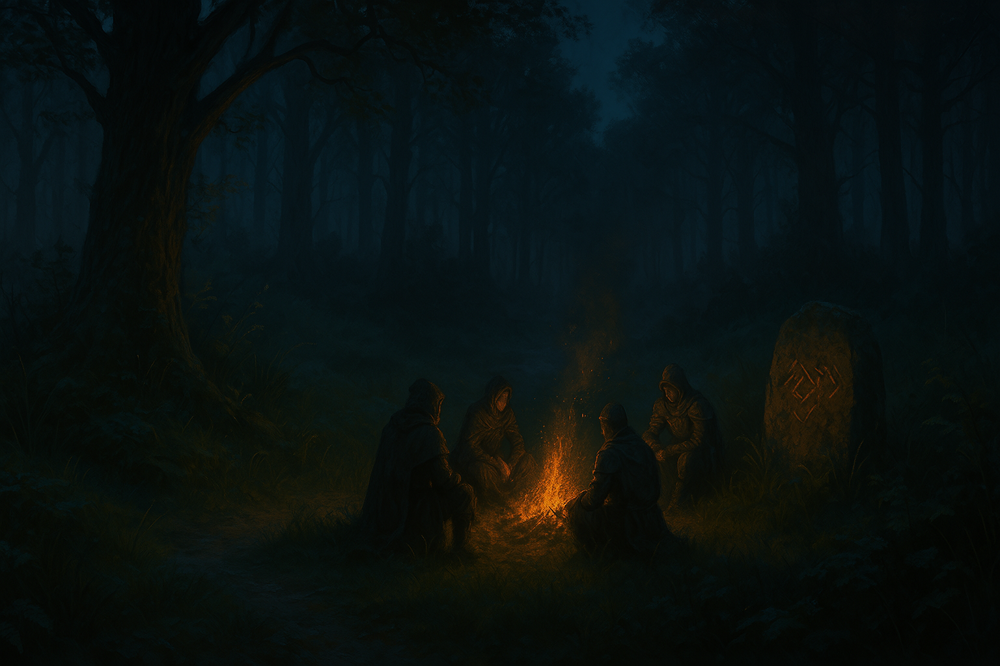

Chapter 3: Into the Woods
Curse of Vowalon


Curse of Vowalon
15048.7.19 日落後
「台北市議員」步入夜色，邁入了嚎叫森林。天色逐漸暗去，冒險者們在龍人德魯伊烏柯的經驗下，根據謹慎的判斷，所幸沒有迷路。然而，他也發現在路邊，似乎有用德魯伊語留下的神秘訊息。
夜晚，冒險者們找了個相對安全的地方，紮了營，也吃了潔絲敏送給他們的三明治作為晚餐，作為短暫休息。
準備出發繼續冒險時，米多莉和家亨突然感到不適而嘔吐，其他冒險者也有些微的不舒服。對此，先前便對米多莉有所不滿的烏犧奧泥對他更感到質疑，甚至對潔思敏以了嚴厲的指控。但大家都知道當務之急，應該是幫冒險者們脫離中毒的症狀。最終，在冒險者們互相幫助下，暫時穩定了身體狀況，然後決定去附近尋找被稱為「解毒草」的植物。
花了不少時間，找到了解毒草後，冒險者們趕緊服用，接著就近找了合適的地點，紮營睡去。兩位妖精家亨和薩梅爾輪流守夜，很幸運地，這一晚平靜地過去了。
15048.7.20
一早，台北市議員們從睡夢中醒來，簡單吃了乾糧作為早餐後，便繼續趕路。危險的嚎叫森林不是適合久留的地方。
突然間，冒險者們遇到了一批三隻的野狼。對初為冒險者的他們來說，三隻狼還算簡單。在奮戰後擊敗了野狼，他們也搜刮了狼皮。
渡過了河，台北市議員再次聽到了野狼的嚎叫聲，並做好準備，要對狼群進行攻擊。然而，才剛打完一場戰鬥，這次的狼群又比先前更多。在這場慘烈的戰鬥中，兩名冒險者在死亡邊緣甦醒，另外三名冒險者甚至葬送了性命，只留下三名冒險者成功擊退了狼群。
突然間，那三名死亡的冒險者咳著嗽醒了過來，看起來極度疲憊。大家對此都感到十分驚訝，但撿來的命沒什麼好追究的。檢查了這幾名被復活的冒險者身體狀況後，他們並沒有被復活成殭屍或其他奇怪的狀況。冒險者們決定在此好好休息，以免在路途中再次遇上危險而保護不了自己。
經過了半日的休息，台北市議員於深夜再度上路。他們發現了路邊一處刻有神秘的字樣，隨後，一名自稱為「牧人拉黎爾」的年輕妖精德魯伊女子以及他的異色瞳狼夥伴蓋瑞現身。雖然看起來警戒，拉黎爾與蓋瑞並無惡意。在確認冒險者們的目的後，拉黎爾告訴他們嚎叫森林裡的動物們都被神秘的力量所影響了。他已經調查了一段時間，卻還是無法解除這個問題。
拉黎爾雖然性格強硬，但是還算友善。他決定帶領冒險者們朝著他們的目的地魏斯科前進。與台北市議員一起擊退了一批來襲的狼後，他們終於走出了嚎叫森林，拉黎爾和蓋瑞則一同回到了森林內。
15048.7.19 After Sunset
"The Tapei City Councilor" walked into the night, and also into the Howling Forest. As the light got dimmer, with the experience of Uko, the dragonborn druid, and his careful decision, the adventurers didn't get lost. However, Uko also found some mysterious messages left in druidic on the way.
At night, the adventurers found a rather safe place, set up a camp, and had Jasmine's sandwiches as dinner, as a short rest.
When the party prepared to continue on the adventure, Midori and Jiaheng suddenly felt ill and wanted to vomit. Other adventurers also felt somewhat uncomfortable. Usioni, who had been upset with Midori, suspected her even more after this, and even had serious accusations against Jasmine. However, everyone knew that the priority is to relieve the adventurers from their symptoms. As the adventurers helped each other, Midori and Jiaheng felt a bit better, and so the party decided to go look for the plant that was called the "Detox Herb".
After spending some time and found the Detox Herb, the adventurers consumed itm and found a nearby location to set up a tent for a long rest. The two elves, Jiaheng and Samael took their night shifts. Luckily, that was a peaceful night.
15048.7.20
Early up in the morning, the Tapei City Councilor woke up from their dream. After some rations as breakfast, they continued on their trip. The dangerous Howling Forest is definitely not a place to stay for long.
Suddenly, the adventurers ran into a group of three wolves. To the rookie adventurers, three wolves seemed trivial. After the fight, they defeated the wolves, and gathered some wolf skins.
After crossing the river, the Taipei City Councilor heard the howling of the wolves again, and got ready to attack the wolves. However, they just finished a fight, and also, there were even more wolves this time. In this fierce battle, two adventurers rose from their death, while three other adventurers were lost their life. Only three were left to defeat the wolves.
Suddenly, the three dead adventurers coughed and woke up, looking exhausted. Everyone was surprised about it. But these life were given, so there's nothing they would argue with. After checking the resurrected adventurers, they were not resurrected as zombies or had other weird situations. The adventuerers decided to take a good rest, for fear of facing more danger and couldn't protect themselves.
After resting for half a dat, the Tapei City Councilor continued on their journey in midnight. They found mysterious texts carved on the road. Not after long, a young female elf druid who called herself "Ra'Leer the Herder" and her heterochromia wolf, Gary, showed up. Although looking vigilant, Ra'Leer and Gary meant no harm. After knowing the adventuerer's purpose, Ra'Leer told them that the animals in the forest had been influenced by some mysterious power. She had been investigating for some time, but still, couldn't solve this problem.
Although Ra'Leer was tough in her personality, she's rather kind. She decided to lead the adventurers to their destination, Wescoe. After defeating another pack of wolves with the Taipei Councilor, they finally walked through the Howling Forest, while Ra'Leer and Gary retread back to the forest.